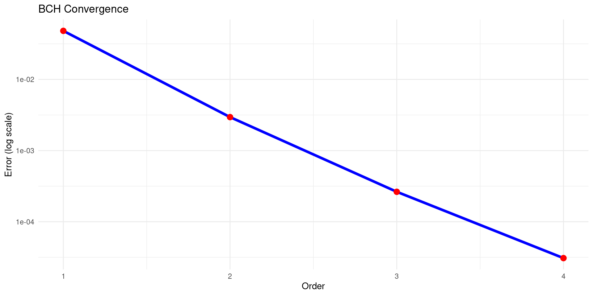

Chapter 11 Baker-Campbell-Hausdorff Formula
commutator <- function(X, Y) X %*% Y - Y %*% X
bch_expansion <- function(X, Y, order = 4) {
Z <- X + Y
if (order >= 2) Z <- Z + 0.5 * commutator(X, Y)
if (order >= 3) {
Z <- Z + (1/12) * commutator(X, commutator(X, Y))
Z <- Z - (1/12) * commutator(Y, commutator(X, Y))
}
if (order >= 4) {
Z <- Z - (1/24) * commutator(Y, commutator(X, commutator(X, Y)))
}
return(Z)
}scale <- 0.1
set.seed(456)
X <- scale * matrix(rnorm(9), 3, 3)
Y <- scale * matrix(rnorm(9), 3, 3)
direct <- expm(X) %*% expm(Y)
errors <- sapply(1:4, function(o) {
norm(direct - expm(bch_expansion(X, Y, o)), "F")
})
ggplot(data.frame(Order = 1:4, Error = errors),
aes(x = Order, y = Error)) +
geom_line(color = "blue", size = 1.5) +
geom_point(color = "red", size = 3) +
scale_y_log10() +
labs(title = "BCH Convergence", y = "Error (log scale)") +
theme_minimal()